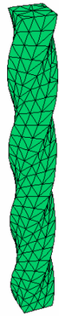

|
3d_twist |

  
|
|
3d_twist |
|
{ 3D_TWIST.PDE
This problem shows the use of the function definition facility of FlexPDE to create a
twisted shaft in 3D.
The mesh generation facility of FlexPDE extrudes a 2D figure along a straight path in Z,
so that it is not possible to directly define a screw-thread shape.
However, by defining a coordinate transformation, we can build a straight rod in 3D and
interpret the coordinates in a rotating frame.
Define the twisting coordinates by the transformation
xt = x*cos(a) - y*sin(a); x = xt*cos(a) + yt*sin(a)
yt = x*sin(a) + y*cos(a); y = yt*cos(a) - xt*sin(a)
zt = z
with
a = 2*pi*z/Length = twist*z (for a total twist of 2*pi radians over the length )
In this transformation, x and y are the coordinates FlexPDE believes it is working with,
and they are the coordinates that move with the twisting, so that the cross section is
constant in x,y. xt and yt are the "lab coordinates" of the twisted figure.
The chain rule then gives
dF/d(xt) = (dx/dxt)*(dF/dx) + (dy/dxt)*(dF/dy) + (dz/dxt)*(dF/dz)
(with similar rules for yt and zt).
and dx/dzt = twist*[-xt*sin(a) + yt*cos(a)] = y*twist, etc.
In FlexPDE notation, this becomes
dxt(F) = cos(a)*dx(F) - sin(a)*dy(F)
dyt(F) = sin(a)*dx(F) + cos(a)*dy(F)
dzt(F) = twist*[y*dx(F) - x*dy(F)] + dz(F)
These relations are defined in the definitions section, and used in the equations
section, perhaps nested as in the heat equation shown here.
}
title '3D Twisted Rod'
coordinates cartesian3
select ngrid=25 { use enough mesh cells to resolve the twist }
variables Tp
definitions long = 20 wide = 1 z1 = -long/2 z2 = long/2
{ transformations } twist = 2*pi/long { radians per unit length } c = cos(twist*z) s = sin(twist*z) xt = c*x-s*y yt = s*x+c*y
{ functional definition of derivatives } dxt(f) = c*dx(f) - s*dy(f) dyt(f) = s*dx(f) + c*dy(f) dzt(f) = twist*(y*dx(f) - x*dy(f)) + dz(f)
{ Thermal source } Q = 10*exp(-(xt+wide)^2-(yt+wide)^2-z^2)
initial values Tp = 0.
equations |
 |
{ the heat equation using transformed derivative operators }
Tp: dxt(dxt(Tp)) + dyt(dyt(Tp)) + dzt(dzt(Tp)) + Q = 0
extrusion z = z1,z2
boundaries
surface 1 value(Tp)=0 { fix bottom surface temp }
surface 2 value(Tp)=0 { fix top surface temp }
Region 1
start(-wide,-wide) { default to insulating sides }
line to (wide,-wide)
to (wide,wide)
to (-wide,wide)
to close
monitors
grid(xt,yt,z) { the twisted shape }
plots
grid(xt,yt,z) { the twisted shape again }
{ In the following, recall that x and y are the coordinates which
follow the twist. It is not possible at present to construct a
cut in the "lab" coordinates. }
grid(x,z) on y=0
contour(Tp) on y=0 as "ZX Temp"
contour(Tp) on z=0 as "XY Temp"
end